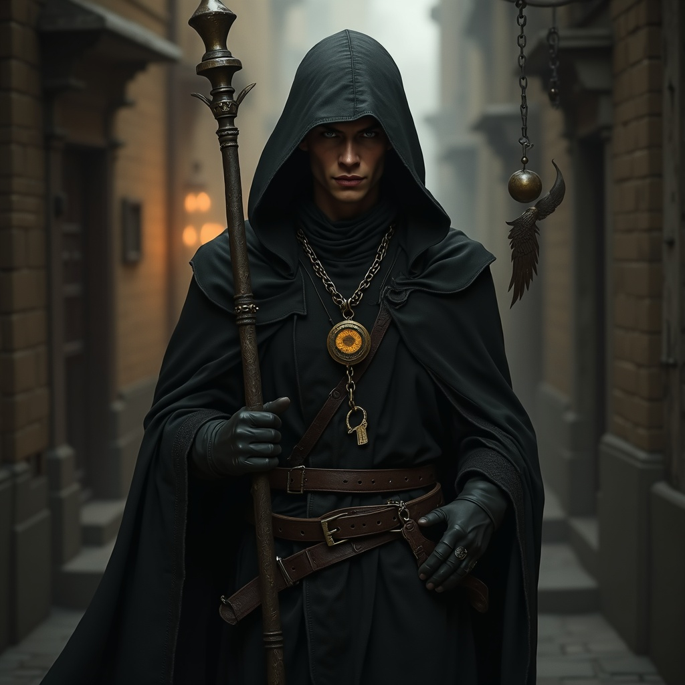

Jutus embodies the complex nature of a fallen deity seeking redemption and revenge in equal measure. Once the mighty Lord of the Underworld and Protector of Oy, his divine status was stripped away as punishment for allowing the dwarven people to break free from their divine indenture, reducing him to the role of mere messenger between gods and mortals. This demotion has left him bitter yet compassionate, caught between his divine nature and mortal concerns in a way that makes him uniquely invested in the struggles of everyday people. Often manifesting as a common thief or wandering rogue, Jutus moves through the world with the practiced stealth of one who has learned to operate in shadows, both literal and metaphorical. His resentment toward his fellow deities drives him to subtly undermine their grand designs while simultaneously offering aid to mortals who face injustice or oppression. Unlike other gods who view mortals as distant subjects, Jutus sees them as kindred spirits - beings trapped by circumstances beyond their control, struggling against forces far greater than themselves. This perspective makes him perhaps the most approachable of all deities, though his help often comes with the understanding that he expects mortals to help themselves as well.